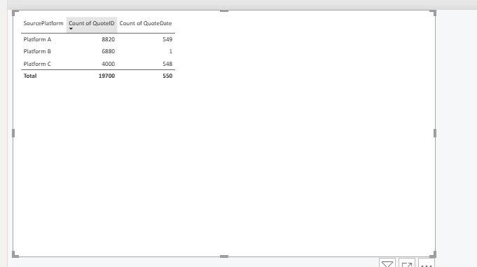

Problem
Quotation reports from separate systems could be viewed individually, but Management did not have one overall view of quoting activity and performance.
Combining three source platforms through Bronze, Silver and Gold into one management report
Quotation reports from separate systems could be viewed individually, but Management did not have one overall view of quoting activity and performance.
I built a Medallion solution in Fabric that takes CSV, nested JSON and Excel data through Bronze, Silver and Gold into a semantic model and Power BI.
The finished report provides one place to review quote volume, win rate, branches, users, customers, lost quotes and open follow-up across platforms.
The real reporting need came from quotation data being held across systems such as CargoWise and WebCargo. Each platform could be reported separately, but that did not show the full quotation pipeline or provide one consistent way to manage all quotes together.
Management needed an overall view of where the business was with quoting, how platforms compared, which branches and users were performing well, where customer conversion was weak, why quotes were being lost and which open quotes still needed follow-up.
The portfolio project recreates that problem with three sources that deliberately start in different formats and structures.
A relatively flat structure with straightforward quote fields.
Nested account, route and pricing fields, with different status values and date formats.
Different column names and currency handling that needed to be aligned with the other platforms.
The three test sources are first ingested into the Bronze Lakehouse. This keeps a raw copy of each platform before any cleaning or business rules are applied, making it possible to trace transformed values back to their source.
Silver is where the three sources are turned into the same quotation structure. Platform B's nested fields are flattened, platform-specific outcomes are mapped to Won, Lost and Open, dates are converted into a consistent format, column names are aligned and currency fields are prepared for reporting.
The important difference is that the data is no longer shaped around how each source platform stores a quote. It is shaped around how the business needs to analyse quotations.
Validation showed that Platform B had thousands of quote records but almost no populated QuoteDate values after the first transformation. The source held the date in a different timestamp format, so a basic date cast returned null. I corrected the conversion in Silver and rebuilt the Gold output rather than patching the issue in Power BI.

I also found duplicate CustomerIDs linked to different customer names. That made a straightforward customer dimension unreliable. I investigated the duplicates and simplified the modelling approach so customer reporting could remain consistent without forcing an invalid one-to-many relationship.
These checks were part of the ETL process, not report fixes. The aim was to make the Gold layer reliable before it reached the semantic model.
The Gold notebook combines the three standardised Silver outputs and creates the final reporting tables, including FactQuotes and supporting dimensions. This is the point where the separate platforms become one consistent quotation dataset.
The Gold tables feed a Direct Lake semantic model. Relationships and measures provide one reporting base for quote status, platform, customer, branch, quote owner, origin, destination and date analysis.
Only measures used in the finished report are included in the case study. Quote Rank supports the user-performance view.
Quote Rank =
RANKX(
ALL('dimemployee'[QuoteOwner]),
[Quote Count],
,
DESC
)The report is the final output of the ETL and modelling work. It moves from the overall quotation position into losses and then open quotes requiring follow-up.
Quote volume and trends, Won/Lost/Open, Win %, revenue, cost, gross profit, customer conversion, branch comparison and quote-user performance.
Lost reasons, lost revenue, lost gross profit and customers receiving considerable quoting effort but converting poorly.
Outstanding quote detail and ageing so managers can identify quotes that still need follow-up.
Three differently structured source platforms became one consistent quotation reporting model.
The Medallion architecture keeps raw, cleaned and reporting-ready data separate. Management receives one combined view of quote performance instead of looking at platform reports individually, making it easier to compare platforms, branches and users, understand customer conversion, investigate losses and follow up open quotes.
Microsoft Fabric · Medallion Architecture · Lakehouse · Data Factory · Notebooks · Spark SQL · ETL · Data Quality · Direct Lake · Semantic Modelling · Power BI · DAX